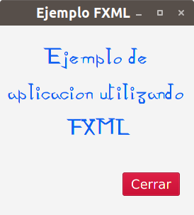

JXML
Además de la forma que hemos visto de diseñar interfaces, JavaFX nos ofrece otra forma que hace que el diseño de interfaces sea aún más sencillo y visual. Utilizando JXML separamos el diseño de la interfaz de la lógica de la misma y así haremos que nuestro código sea mucho más fácil de mantener.
JXML no es más que un lenguaje basado en XML que contiene la definición del diseño de nuestra interfaz y que luego podemos cargar desde nuestra aplicación JavaFX y así evitarnos todo el código necesario para el diseño de la misma.
Desde nuestro IDE, bien usemos NetBeans o Eclipse, podemos crear aplicaciones JavaFX que utilicen FXML y que nos crea el fichero FXML, el controlador para dicha vista y un esqueleto de aplicación que carga dicho fichero para que nuestra aplicación muestre la interfaz definida en el fichero FXML.
La siguiente imagen muestra una interfaz muy simple que hemos creado para ejemplificar el uso de JXML.

La siguiente imagen muestra la estructura de dicho proyecto usando JXML.
Ahora os dejo el código de cada uno de los ficheros del mismo.
Ejemplo.fxml
<?xml version="1.0" encoding="UTF-8"?>
<?import javafx.geometry.*?>
<?import javafx.scene.text.*?>
<?import javafx.scene.control.*?>
<?import java.lang.*?>
<?import javafx.scene.layout.*?>
<?import javafx.scene.layout.VBox?>
<VBox alignment="CENTER" prefHeight="267.0" prefWidth="274.0" spacing="30.0" xmlns:fx="http://javafx.com/fxml/1" xmlns="http://javafx.com/javafx/8" fx:controller="aplicacion.EjemploControlador">
<children>
<Label text="Ejemplo de aplicacion utilizando FXML" textAlignment="CENTER" textFill="#0f62f2" wrapText="true">
<font>
<Font name="Ani" size="30.0" />
</font>
</Label>
<HBox alignment="CENTER_RIGHT" prefHeight="48.0" prefWidth="274.0">
<children>
<Button fx:id="btCerrar" mnemonicParsing="false" onAction="#cerrar" style="-fx-base: #dc143c;" text="Cerrar">
<font>
<Font size="18.0" />
</font>
</Button>
</children>
<padding>
<Insets bottom="10.0" left="10.0" right="10.0" top="10.0" />
</padding>
</HBox>
</children>
<padding>
<Insets bottom="10.0" left="10.0" right="10.0" top="10.0" />
</padding>
</VBox>
EjemploControlador.java
package aplicacion;
import javafx.fxml.FXML;
import javafx.scene.control.Button;
public class EjemploControlador {
@FXML
private Button btCerrar;
@FXML
private void cerrar() {
System.exit(0);
}
}
Principal.java
package aplicacion;
import javafx.application.Application;
import javafx.stage.Stage;
import javafx.scene.Scene;
import javafx.scene.layout.VBox;
import javafx.fxml.FXMLLoader;
public class Principal extends Application {
@Override
public void start(Stage escenarioPrincipal) {
try {
VBox raiz = (VBox)FXMLLoader.load(getClass().getResource("Ejemplo.fxml"));
Scene escena = new Scene(raiz);
escenarioPrincipal.setScene(escena);
escenarioPrincipal.show();
} catch(Exception e) {
e.printStackTrace();
}
}
public static void main(String[] args) {
launch(args);
}
}
Podemos ver como nuestra aplicación queda muy simple, ya que lo único que hace es cargar el fichero jxml, lo interpreta y nos devuelve el nodo raíz de la estructura de nodos de nuestra interfaz, que en nuestro caso es un VBox. Esto se hace mediante la línea:
VBox raiz = (VBox)FXMLLoader.load(getClass().getResource("Ejemplo.fxml"));Si nos fijamos en el fichero Ejemplo.jxml se indica:
- La estructura jerárquica de nuestra interfaz con sus diferentes nodos y propiedades que hayamos modificado.
- Quién será el controlador para dicha vista (
fx:controller="aplicacion.EjemploControlador") - El nombre de un botón al que luego podremos hacer referencia en el controlador (
fx:id="btCerrar"). - El nombre de un método que será el encargado de manejar el evento al pulsar dicho botón (
onAction="#cerrar").
El fichero EjemploControlador.java es el controlador para la vista anterior, que en nuestro caso es muy simple. Podemos destacar las anotaciones @FXML que son las que permiten hacer el mapeo entre los elementos de la vista y del controlador. Estas anotaciones no serían necesarias si el modificador de acceso fuese public, pero al ser private que es lo recomendado, sí son necesarias.
Además en un controlador podemos añadir el método initialize (con la anotación @FXML) con lo que nos quedaría un controlador con el siguiente código, que ejecutará el código de inicialización para la interfaz y en el que podremos asignar modelos a controles o registrar nuevos métodos manejadores para los controles.
public class MiControlador implements Initializable {
@FXML private Button button;
@FXML
private void initialize()
//Aquí podemos asignar modelos a controles
//También podemos registrar manejadores de eventos
}
}Como podemos observar, nuestra aplicación está muy bien estructurada, ya que el código de la clase principal es muy simple y luego tenemos bien separada la vista y su comportamiento. Pero tenemos un inconveniente añadido ya que ahora debemos aprender otro lenguaje como JXML para llevar a cabo el diseño de la vista. Sin embargo, tengo una buena noticia: no tendremos que aprender el lenguaje JXML ni modificar a mano los ficheros .jxml, pero eso lo veremos en el siguiente apartado.